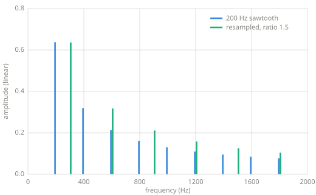
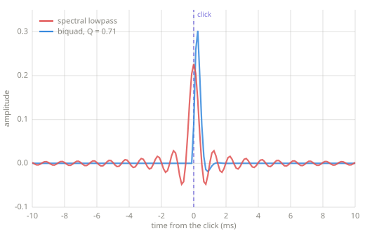

Frequency-domain effects¶
Analyze with the STFT, change the bins, resynthesize with the inverse. Every effect in this chapter is one edit inside that pattern.
Chapter 12 — frequency-domain effects.
The pattern¶
Chapter 11 ended with a round trip: istft(stft(x)) returns the
signal it was given. That identity path is the basis for every effect here. The
forward transform turns audio into editable spectra, the edit does the effect's work,
and the inverse turns the result back into sound. The time-domain chapters worked with
gains and delay lines; this chapter rewrites bins.
Resampling¶
The first effect predates the pattern and needs no transform. Reading a signal at a different rate changes pitch and duration together, the way a tape machine does when its speed changes:
def resample(x, ratio):
"""Play the signal at a different rate: pitch and duration change
together.
Reads the input at fractional positions ratio apart, interpolating
linearly as the vibrato of Chapter 7 does. A ratio of 2.0 halves the
duration and doubles every frequency.
"""
out = []
pos = 0.0
while pos < len(x) - 1:
i = int(pos)
frac = pos - i
out.append((1.0 - frac) * x[i] + frac * x[i + 1])
pos += ratio
return out

A 200 Hz sawtooth resampled at ratio 1.5, measured with the Chapter 8 probe. Every harmonic moves to 1.5 times its frequency. The spectrum scales as a whole, so the result is the same sound higher, not a brighter version of the original.
Resampling cannot change pitch and duration separately; the two always move together. Separating them, raising pitch while keeping length, requires the transform machinery, and the phase vocoder cited under Learn more is the standard way to do it.
Spectral filtering¶
Zeroing every bin above a cutoff is a lowpass filter with an exactly rectangular response, which no Chapter 9 design achieves:
def spectral_lowpass(x, sr, cutoff, frame=512, hop=256):
"""Zero every bin above the cutoff, then resynthesize."""
out = []
for bins in stft(x, frame, hop):
n = len(bins)
kept = [0j] * n
for k in range(n):
f = min(k, n - k) * sr / n # the upper bins mirror the lower
if f <= cutoff:
kept[k] = bins[k]
out.append(kept)
return istft(out, frame, hop)
def robotize(x, frame=512, hop=256):
"""Discard every bin's phase and keep the amplitudes.
Each frame resynthesizes with all its content phase-aligned at the
frame start, so the output pulses at the frame rate regardless of
the input's pitch. On speech the result is the classic robot voice.
"""
frames = [[abs(b) + 0j for b in bins] for bins in stft(x, frame, hop)]
return istft(frames, frame, hop)
The rectangular response has a cost. A rectangle in the frequency domain becomes one tall peak with symmetric ripples either side in the time domain, and the ripples shrink as the distance from the peak grows. That shape is the sinc function, \(\sin(x)/x\). The filter's impulse response is a sinc, so one input sample comes out as a decaying oscillation at the cutoff frequency. A narrower rectangle produces a wider sinc, so the ringing lengthens as the cutoff falls. Measured down to a hundredth of the peak, it runs about 18 ms either side of a transient at a 1000 Hz cutoff and about 7 ms at 2000 Hz. A longer frame does not lengthen it. The frame bounds how far the spread can reach, and the cutoff sets it.

One click through both filters at a 1000 Hz cutoff, generated with the
spectral_lowpass above and the Chapter 9 biquad. The spectral filter's response is
symmetric about the click, so half of its ringing arrives before the transient that
caused it. The biquad holds at zero until the click and settles about a millisecond
after. The plot spans 10 ms either side, and the spectral ringing continues past both
edges of it.
No Chapter 9 design can reproduce the sinc's symmetry. A causal filter cannot respond before its input arrives, so its ringing follows the transient. The spectral filter's ringing is centered on the transient, and the half arriving first is audible as pre-echo. Heavy bin editing adds the watery artifact known as musical noise. Frequency-domain filtering trades the smooth compromises of Chapter 9 for an exact response and a new class of artifacts.
Robotization¶
robotize in the listing above keeps every bin's amplitude and discards every phase.
Each frame then resynthesizes with all of its content aligned to the frame start, so
the output pulses at the frame rate no matter what pitch came in. Speech keeps its
vowels and consonants, since those live in the amplitude spectrum, but lands on one
constant buzz. Chapter 11 listed phase as half the data; robotization
deletes that half deliberately.
Key parameters¶
| Parameter | What it controls |
|---|---|
| Frame length | The resolution of every edit, inherited from the STFT. |
| Cutoff | For spectral filtering, the last surviving frequency. |
| Ratio | For resampling, the factor on pitch and on speed, jointly. |
Pitfalls
- Frequency-domain effects buy latency. An STFT effect cannot emit a frame before reading all of it, so the delay is at least one frame, and practical implementations add a frame of overlap. The real-time cost is structural, not an implementation detail.
- Bin edits must respect the mirror. For real signals the upper half of the spectrum mirrors the lower half, and an edit applied to one half only produces a complex, unplayable result.
- Musical noise. Aggressive independent bin edits decorrelate neighboring frames, and the residue is audible as watery chirping. Production spectral processors smooth their edits across time and frequency.
Related effects¶
- Filters: the smooth time-domain route to the same goal as spectral filtering.
- Delay lines: the interpolated read that resampling reuses.
- Waveforms: the oscillators whose spectra these effects rewrite.
Learn more¶
- Udo Zölzer (ed.), DAFX: Digital Audio Effects, 2nd ed., Wiley — the spectral processing chapters.
- Julius O. Smith III, Spectral Audio Signal Processing, ccrma.stanford.edu/~jos/sasp — the STFT effect framework in full.
- J. Laroche and M. Dolson, "Improved Phase Vocoder Time-Scale Modification of Audio," IEEE Transactions on Speech and Audio Processing, 1999 — pitch and time decoupled.